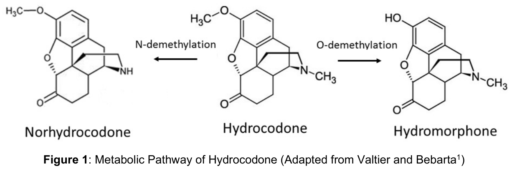
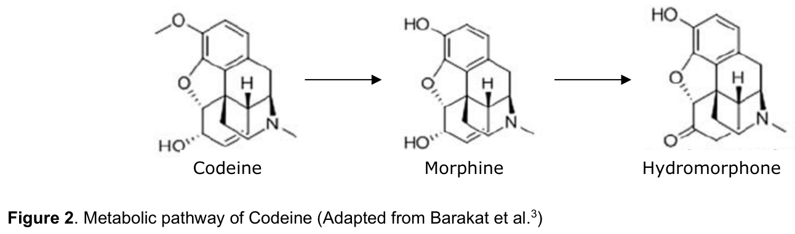

Technical Letters · TL15 (replaces TL2018/04)
Edition v2.0, 2018 (version 2.0) · effective 6 March 2018 · superseded
Retrieved on 25 November 2026 from https://www.wada-ama.org/sites/default/files/resources/files/tl15_hydromorphone.pdf
Editions: v3.0, 2021 (current) · v2.0, 2018
p. 1
HYDROMORPHONE
*The approval by the WADA Executive Committee is applicable only to Technical Letters issued after November 2019.
The World Anti-Doping Agency wishes to draw the attention of the Laboratories to the following issue that may affect Laboratory operations. This pertains, in particular, to the possible detection of the prohibited narcotic Hydromorphone in urine Samples resulting from the administration of the permitted drug Hydrocodone or resulting from the administration of high doses of either the Prohibited Threshold Substance Morphine or the permitted drug Codeine.
- Detection of Hydromorphone as a result of the administration of Hydrocodone
It is indeed reported in the literature¹ that Hydrocodone is metabolized by O-demethylation to Hydromorphone and by N-demethylation to Norhydrocodone (Figure 1).
In single-dose administration studies1,2 of Hydrocodone, it was found that the levels of Norhydrocodone in urine were always higher than or equal to the parent compound, whereas the levels of Hydromorphone were lower. Additionally, Norhydrocodone was detected in urine for a longer time than Hydromorphone.
In a different study involving a population of 25,200 subjects treated for chronic pain by multiple doses of hydrocodone/acetaminophen formulation³ , Barakat et al. showed that the metabolic Hydromorphone/Hydrocodone ratio varied between 7.4 and 35.1%.

Figure 1: Metabolic Pathway of Hydrocodone (Adapted from Valtier and Bebarta 1 )
¹Valtier S and Bebarta VS. Excretion Profile of Hydrocodone, Hydromorphone and Norhydrocodone in Urine Following Single Dose Administration of Hydrocodone to Healthy Volunteers. J Anal Toxicol 36: 507-514, 2012.
²Cone EJ et al. Prescription Opoids. II. Metabolism and Excretion Patterns of Hydrocodone in Urine Following Controlled Single-Dose Administration. J Anal Toxicol 37: 486-494, 2013.
³Barakat NH et al. Relationship between the Concentration of Hydrocodone and its Conversion to Hydromorphone in Chronic Pain Patients Using Urinary Excretion Data. J Anal Toxicol 36: 257-264, 2012.
p. 2
*The approval by the WADA Executive Committee is applicable only to Technical Letters issued after November 2019.
.
Therefore, WADA recommends the following:
- Whenever a Laboratory detects Hydromorphone in an Initial Testing Procedure of a urine Sample, an additional test for the presence of Hydrocodone and Norhydrocodone shall be included in the confirmation analysis;
If the concentration of total Hydromorphone (free and conjugated forms) is lower than the concentration of total Hydrocodone or total Norhydrocodone (free and conjugated forms), the Sample should be reported as "Negative". In this specific case, a comment should be added in the Test Report indicating that "Hydromorphone was detected, but in conjunction with Hydrocodone and/or Norhydrocodone which was/were present at higher concentrations. This finding most probably results from an administration of the permitted drug Hydrocodone".
- Detection of Hydromorphone as a result of the administration of Morphine or Codeine Additionally, it was reported in the literature4,5 that Hydromorphone might be found as a minor Metabolite of the prohibited Threshold Substance Morphine, more specifically in urines of patients treated with high doses of Morphine for chronic pain (Figure 2).

Figure 2. Metabolic pathway of Codeine (Adapted from Barakat et al. 3 )
Therefore, it is important to evaluate Hydromorphone findings in the presence of total Morphine at concentrations below the Decision Limit (DL) for Morphine of 1.3 µg/mL (or the adjusted DL if the Specific Gravity is greater than 1.018).
⁴Cone EJ et al. Evidence of Morphine Metabolism to Hydromorphone in Pain Patients Chronically Treated with Morphine. J Anal Toxicol 30:1-5, 2006.
⁵Wasan AD et al. Interpreting Urine Drug Tests: Prevalence of Morphine Metabolism to Hydromorphone in Chronic Pain Patients Treated with Morphine. Pain Medicine 9: 918-923, 2008.
p. 3
*The approval by the WADA Executive Committee is applicable only to Technical Letters issued after November 2019.
Studies5,6 involving patients undergoing treatment with daily high-doses of Morphine have shown that the Hydromorphone/Morphine ratio⁷ ranged between 0.2 to 2.2%⁶ or had a mean ± SD value of 2.4 ± 1.7%⁵ , with urinary Morphine concentrations in the range of 103-537 µg/mL or 21 ± 7.0 µg/mL, respectively. In both studies, the concentrations of Morphine were above its DL.
Therefore, if Hydromorphone is detected a urine Sample in the presence of a total Morphine concentration which is below the DL or adjusted DL for Morphine⁸ (or the finding fails to meet the criteria for reporting an Adverse Analytical Finding (AAF) for Morphine in accordance with the effective version of the TD DL), WADA recommends the following:
- Report the finding as an AAF for Hydromorphone only if the Hydromorphone concentration is greater than 25 ng/mL (50% of the MRPL) and the Hydromorphone/Morphine ratio⁷ is greater than 5%.
Note: When reporting an AAF based on this result a comment shall be included in the Test Report indicating that "Hydromorphone was detected at a level above 25 ng/mL in conjunction with Morphine at a concentration below the DL for Morphine. The Hydromorphone/Morphine ratio was in excess of 5%, which is not consistent with the formation of the detected level of Hydromorphone solely through the metabolism of Morphine."
- Report the result as a Negative Finding if the Hydromorphone/Morphine ratio is below 5%, even if the concentration of Hydromorphone is greater than 25 ng/mL.
Note: A comment shall be included in the Test Report indicating that "Hydromorphone was detected at a level above 25 ng/mL in conjunction with Morphine at a concentration below the DL for Morphine. The Hydromorphone/Morphine ratio was less than 5%, which is potentially consistent with the formation of the detected level of Hydromorphone through the metabolism of Morphine."
- Report the result as a Negative Finding if the Hydromorphone concentration is lower than 25 ng/mL (50% of MRPL), even if the Hydromorphone/Morphine ratio is greater than 5%.
Should you have any further questions, please do not hesitate to contact the WADA Science Department.
⁶Cone EJ, Caplan YH, Moser F, Robert T and Black D. Evidence that Morphine is Metabolized to Hydromorphone But Not to Oxymorphone, J Anal Toxicol 32: 319-323, 2008.
⁷Ratio is defined as the total content of Hydromorphone divided by the total content of Morphine.
⁸These conditions do not apply to the reporting of Hydromorphone findings in the absence of Morphine. In such cases, the finding should be reported as an AAF for Hydromorphone if the concentration is higher than 25 ng/mL (i.e. 50% of MRPL, as per TD MRPL).
Retrieved on 25 November 2026 from https://www.wada-ama.org/sites/default/files/resources/files/tl15_hydromorphone.pdf